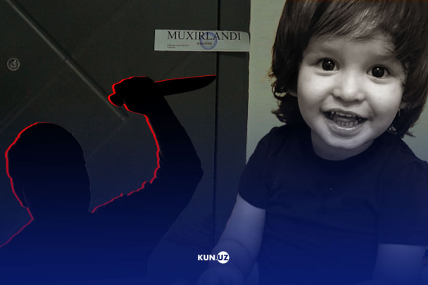
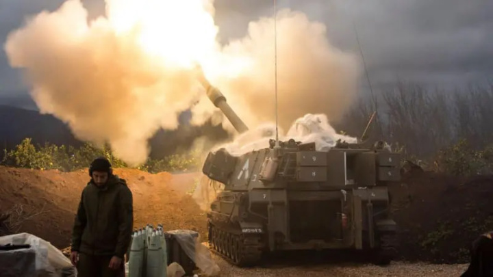
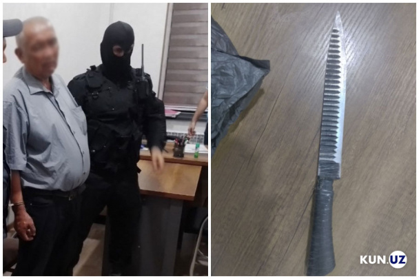
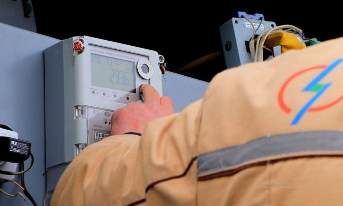
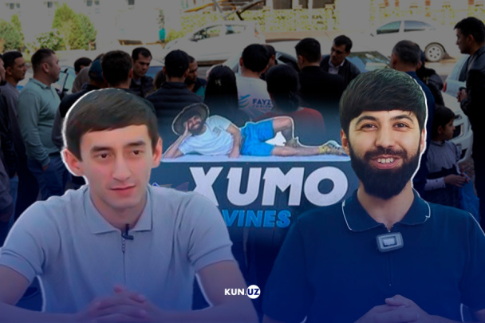
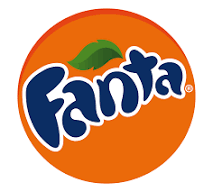

21:55 / 11.07.2024
“Er-xotin alamini boladan olishgan” -
Yashnoboddagi mudhish qotillik haqida
nimalar ma’lum?
Yashnobodda erkak o‘zi birga yashab kelgan ayolning 3 yoshli farzandini
vahshiylarcha pichoqlab o‘ldirdi. Kun.uz muxbiri qotillik
tafsilotlarini surishtirib
voqea joyida bo‘ldi.
Qo‘shnilarning aytishicha, qotillik erkak va ayol o‘rtasidagi
janjal asnosida ro‘y bergan.
So‘nggi yangiliklar
18:08 Iyunda yengil avtomobillar savdosi sezilarli
darajada kamaydi
NATO sammitida 20 dan ortiq davlat Rossiya ustidan g‘alaba
qozongunga qadar Ukrainaga qo‘llashga kafolat berdi
Chilla: o‘zbekistonliklar nimalarni sotib olishmoqda?
Reklama

Isroil va «Hizbulloh»
Isroil va «Hizbulloh»
o‘rtasidagi urush muqarrardek
ko‘rinmoqda.
Birinchi
qadamni kim tashlaydi?
Qashqadaryoda mast haydovchi
Qashqadaryoda mast haydovchi
YHX inspektorini pichoqlab qochdi.
Inspektor vafot etgan
200 kWh'gacha bo‘lgan
200 kWh'gacha bo‘lgan
me’yorni oshirishga asos yo‘q -
Energetika vazirligi
Andijonda piyodalar yo‘lagidan
o‘tayotgan 10 yoshli qizni
mashina urib yubordi
Diniy tashkilotga svet uchun ortiqcha qarzdorlik
hisoblagan HETga ish qo‘zg‘atildi
Bug‘doy o‘rimidan keyin 23 ming
gektar maydon yoqib yuborilgan - “O‘zbekkosmos”
Hokimliklarda ichki
audit xizmatlari tashkil etiladi
“Baxti Tashkentskiy” ishi. Prokuror Baxtiyor
Qudratullayevga 20 yil berishni so‘radi

“Avto 60 oy” rahbari sifatida tanilgan Jamsh
id
Bahodirov 9 yil-u
8 oyga ozodlikdan mahrum etildi
Tadbirkorlarga eski cheklarni tahrirlash imk
oni berilyapti.
Asosiy savollarga javoblar
Ortiqcha elektr energiyasi ishlatgan tadbirkor
lardan 2 barobar haq undirilmoqda
Firibgarlar talabaning nomidan 6
ta bankdan 73 mln so‘m kredit
oldi
Firibgarlar Payme va Markaziy bank
xodimlari niqobida talabaning ishonchiga
kirib, uning kartasidagi
pullar o‘g‘irlanib, nomiga mikroqarz
olinayotganini aytishadi. Bunga yo‘l qo‘ymaslik
uchun yigitdan
Svet narxi «cho‘ntaklarga zarba» bera
boshladi: nima qilmoq
kerak?
Iyul oyining dastlabki kuni ijtimoiy tarmoqlarda elektr energiyasi to‘lovi bilan bog‘liq
noroziliklar urchidi. Odamlar 1 iyul sanasi kirganiga
10 daqiqa bo‘lganda hisobiga turli
miqdorda pul yozilganidan, buncha
daqiqa ichida bunaqa miqdorda elektr
energiyasi
“Yo‘llarda bolalar o‘lmoqda,
tizimli o‘zgarishlar kerak” – faollar
qonli YTHlar haqida
Navoiy viloyatida 2 ta BYD krossoverlari o‘zaro poyga o‘ynab, aholi yashash
punktida piyodalar yo‘lagidan
o‘tayotgan yosh qizchani bosib o‘tib ketishi
jamoatchilikni larzaga soldi. Faollar
bolalarning bunday o‘lim
«Siyosatimizdagi haroratni pasaytiring». Bayden
Trampga suiqasd munosabati bilan millatga
murojaat qildi
Gaz zapravkalar uchun qo‘shimcha talablar belgilandi
Ukraina Qrim va Rossiya hududlariga dronlar bilan hujum qildi
G‘azodagi qochqinlar lageriga zarba, Trampga suiqasd va Qirg‘izistondagi sel - kun dayjesti
